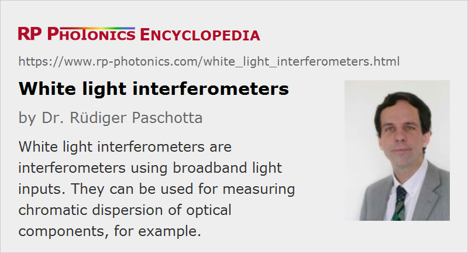

White Light Interferometers
Definition: interferometers using broadband light inputs
German: Weißlichtinterferometer
Categories: photonic devices, optical metrology
How to cite the article; suggest additional literature
Author: Dr. Rüdiger Paschotta
A white light interferometer, used e.g. in the context of low-coherence interferometry, is an interferometer, typically a Michelson interferometer, which works with a white light source, i.e. with a light source with broad optical bandwidth. The light source does not necessarily operate in the visible spectral range, really generating white light. Its temporal coherence has to be fairly small, whereas a high spatial coherence is normally needed. The high spatial coherence combined with a broad bandwidth can most easily be obtained by launching light from a bulb into a single-mode fiber, but this leads to a very small launched power. The radiance (brightness) can be increased by many orders of magnitude by using a superluminescent source such as a superluminescent diode. In some cases, wavelength-swept tunable lasers are used.
The detector in a white light interferometer can either be a photodetector which integrates contributions of different wavelengths and records the signal in the time domain, or a spectrometer (spectral phase interferometry).
Application of White Light Interferometry
White light interferometry is used for different purposes. The main applications are:
- Medical imaging is possible with the technique of optical coherence tomography, which is essentially based on light white interferometry, at least in its original form.
- The measurement of chromatic dispersion. Here, the dispersive optical element is placed in one interferometer arm, and the detector signal is monitored while scanning the relative arm length through some range. Around zero arm length difference, interferometric wiggles occur, whereas the signal is about constant for large arm length differences. With strong dispersion, the recorded interferogram becomes broader. By applying a Fourier transform algorithm to the recorded interferogram, it is possible to retrieve the complex reflection or transmission coefficient of the device under test, and numerical differentiation reveals the wavelength-dependent group delay and chromatic dispersion.
- The measurement of distances. Compared with interferometers based on narrow-linewidth laser sources, the typical ambiguity issues are avoided. A special case is the measurement of surface profiles. For example, a Michelson interferometer with a CCD camera as detector may be used. Again, images are recorded for different arm length differences. Each pixel displays the interferometric wiggles around the point of zero arm length difference at the given transverse location. Unlike the situation in a narrow-band interferometer, no phase-unwrapping procedure is required, so that even rough surfaces can be easily handled.
- Similarly, reflections within a photonic integrated circuit can be detected.
Suppliers
The RP Photonics Buyer's Guide contains 7 suppliers for white light interferometers. Among them:
Questions and Comments from Users
Here you can submit questions and comments. As far as they get accepted by the author, they will appear above this paragraph together with the author’s answer. The author will decide on acceptance based on certain criteria. Essentially, the issue must be of sufficiently broad interest.
Please do not enter personal data here; we would otherwise delete it soon. (See also our privacy declaration.) If you wish to receive personal feedback or consultancy from the author, please contact him e.g. via e-mail.
By submitting the information, you give your consent to the potential publication of your inputs on our website according to our rules. (If you later retract your consent, we will delete those inputs.) As your inputs are first reviewed by the author, they may be published with some delay.
Bibliography
| [1] | K. Naganuma et al., “Group-delay measurement using the Fourier transform of an interferometric cross correlation generated by white light”, Opt. Lett. 15 (7), 393 (1990), doi:10.1364/OL.15.000393 |
| [2] | M. Beck and I. A. Walmsley, “Measurement of group delay with high temporal and spectral resolution”, Opt. Lett. 15 (9), 492 (1990), doi:10.1364/OL.15.000492 |
| [3] | A. P. Kovacs et al., “Group-delay measurement on laser mirrors by spectrally resolved white-light interferometry”, Opt. Lett. 20 (7), 788 (1995), doi:10.1364/OL.20.000788 |
| [4] | S. Diddams and J.-C. Diels, “Dispersion measurements with white-light interferometry”, J. Opt. Soc. Am. B 13 (6), 1120 (1996), doi:10.1364/JOSAB.13.001120 |
| [5] | C. Dorrer et al., “Experimental implementation of Fourier-transform spectral interferometry and its application to the study of spectrometers”, Appl. Phys. B 70, S99 (2000), doi:10.1007/s003400000333 |
| [6] | Q. Ye et al., “Dispersion measurement of tapered air–silica microstructure fiber by white-light interferometry”, Appl. Opt. 41 (22), 4467 (2002), doi:10.1364/AO.41.004467 |
| [7] | A. Gosteva et al., “Noise-related resolution limit of dispersion measurements with white-light interferometers”, J. Opt. Soc. Am. B 22 (9), 1868 (2005), doi:10.1364/JOSAB.22.001868 |
| [8] | T. V. Amotchkina et al., “Measurement of group delay of dispersive mirrors with white-light interferometer”, Appl. Opt. 48 (5), 949 (2009), doi:10.1364/AO.48.000949 |
See also: interferometers, coherence, optical coherence tomography, chromatic dispersion, white light sources, The Photonics Spotlight 2008-02-22
and other articles in the categories photonic devices, optical metrology
|  |
If you like this page, please share the link with your friends and colleagues, e.g. via social media:
These sharing buttons are implemented in a privacy-friendly way!